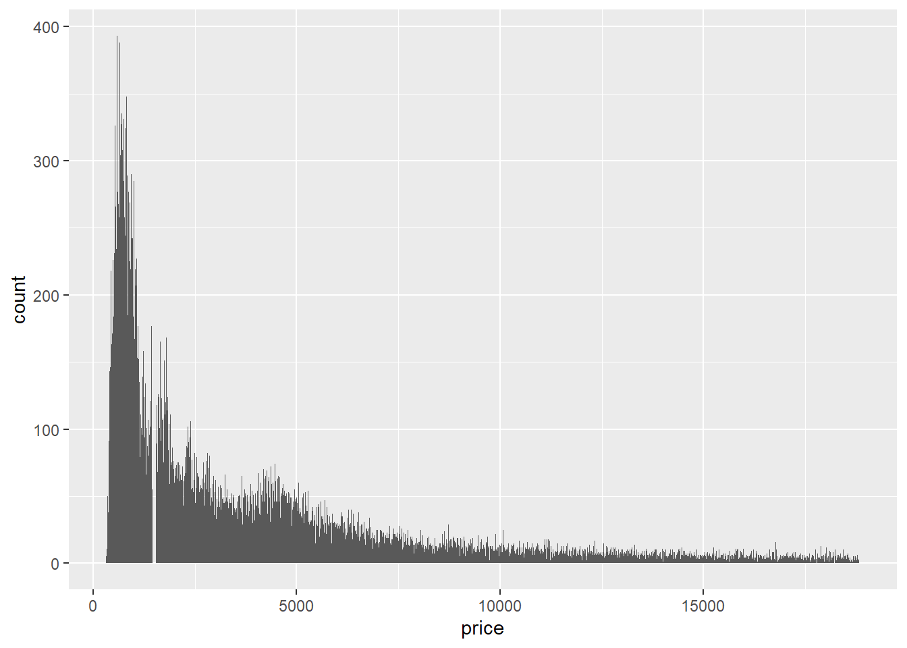
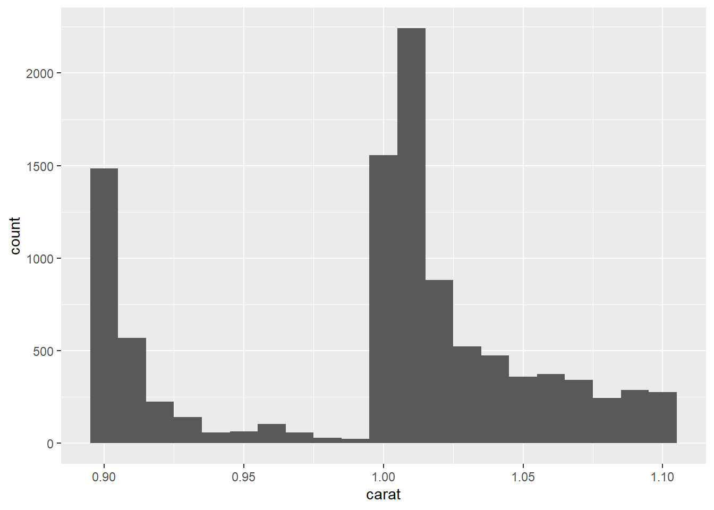
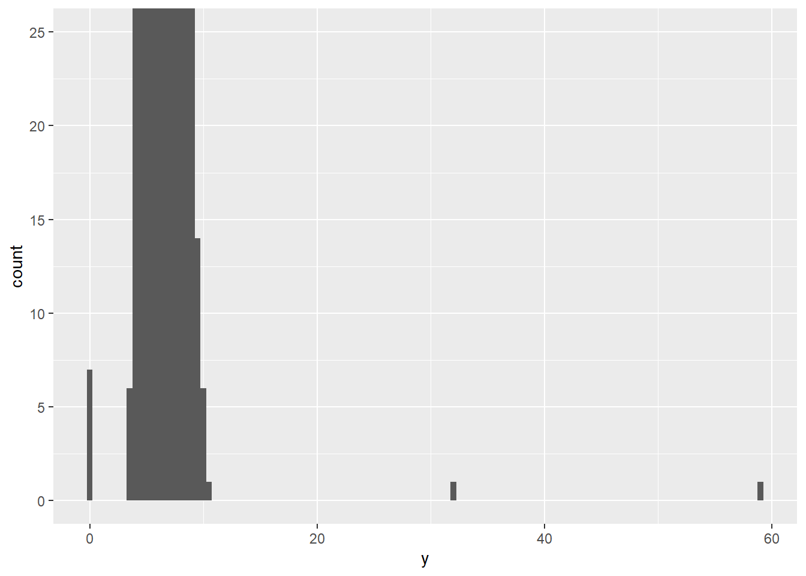
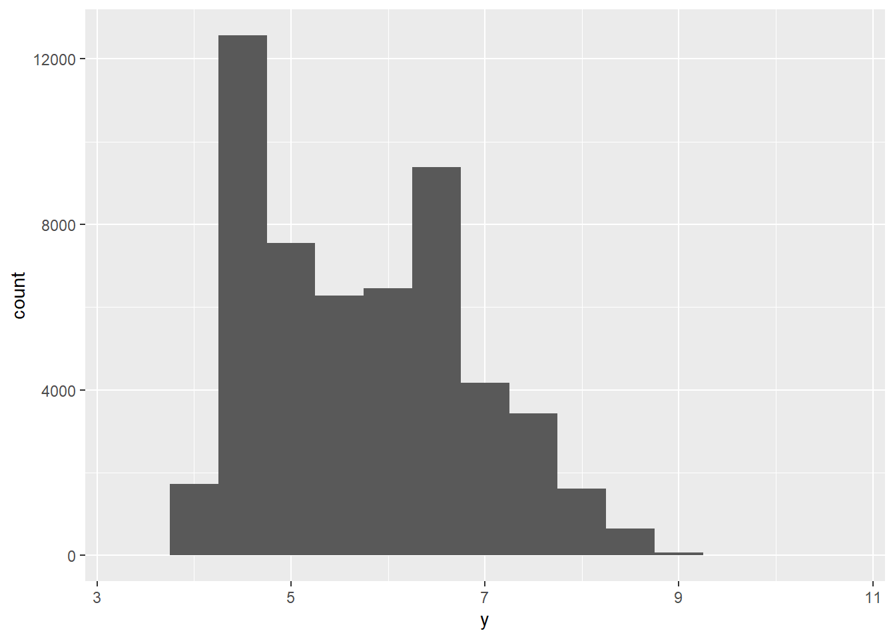
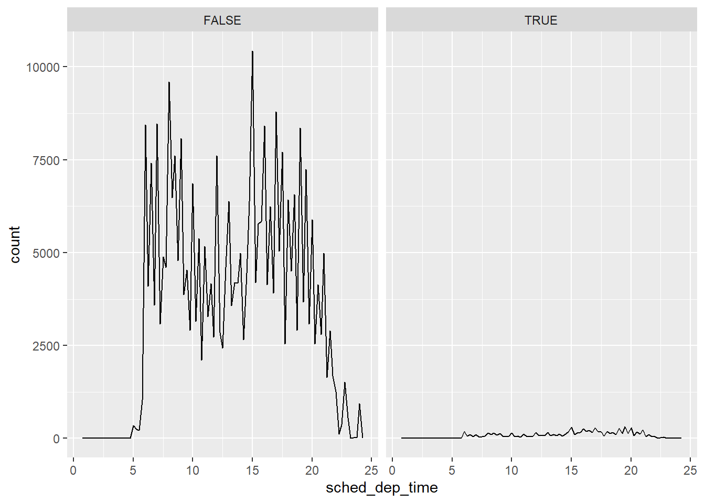
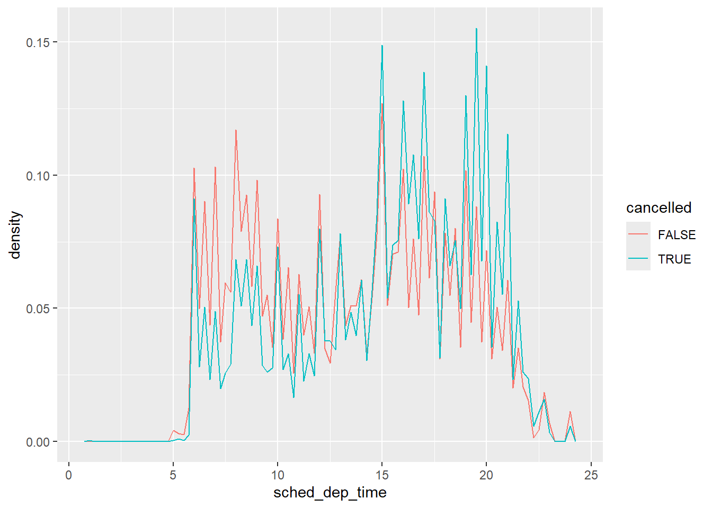

The goals of this Deliverable: 1. Get more familiar with R Markdown & GitHub 2. Learn about EDA in R 3. Generate Data Visualizations for EDA 4. Perform EDA using R
For this deliverable, you will need to read Chapter 10 of the R for Data Science Book and complete exercises 10.3.3 & 10.4.1. You need to generate an R Markdown to respond to the questions and show the code and plots that allowed you to respond to the questions (i.e., every question needs to have a text and code showing the data supporting your answer or showing what you are explaining).
Excercises
10.3.3
Question 1
Explore the distribution of each of the x, y, and z variables in diamonds. What do you learn? Think about a diamond and how you might decide which dimension is the length, width, and depth.
library(tidyverse)
Warning: package 'tidyverse' was built under R version 4.5.3
Warning: package 'tidyr' was built under R version 4.5.3
Warning: package 'purrr' was built under R version 4.5.3
Warning: package 'dplyr' was built under R version 4.5.3
Warning: package 'forcats' was built under R version 4.5.3
Warning: package 'lubridate' was built under R version 4.5.3
── Attaching core tidyverse packages ──────────────────────── tidyverse 2.0.0 ──
✔ dplyr 1.2.1 ✔ readr 2.1.5
✔ forcats 1.0.1 ✔ stringr 1.5.2
✔ ggplot2 3.5.2 ✔ tibble 3.3.0
✔ lubridate 1.9.5 ✔ tidyr 1.3.2
✔ purrr 1.2.2
── Conflicts ────────────────────────────────────────── tidyverse_conflicts() ──
✖ dplyr::filter() masks stats::filter()
✖ dplyr::lag() masks stats::lag()
ℹ Use the conflicted package (<http://conflicted.r-lib.org/>) to force all conflicts to become errors
data(diamonds)diamonds |>select(price, x, y, z) |>summary()
price x y z
Min. : 326 Min. : 0.000 Min. : 0.000 Min. : 0.000
1st Qu.: 950 1st Qu.: 4.710 1st Qu.: 4.720 1st Qu.: 2.910
Median : 2401 Median : 5.700 Median : 5.710 Median : 3.530
Mean : 3933 Mean : 5.731 Mean : 5.735 Mean : 3.539
3rd Qu.: 5324 3rd Qu.: 6.540 3rd Qu.: 6.540 3rd Qu.: 4.040
Max. :18823 Max. :10.740 Max. :58.900 Max. :31.800
In diamonds, x is length, y is width and z is depth, all in mm as diamond size tends to be measured in millimeters. x and y have very similar distributions, mostly between about 4 and 9 mm, which makes sense because a diamond’s length is usually at least its width. z is smaller, mostly about 2.5 to 5.5 mm. All three are right-skewed with several peaks.
However there are zeros and diamonds can’t be 0 mm, so these are missing values coded as 0.
Outliers: y reaches about 59 mm, and z about 32 mm which are far greater than the 3rd quantule so it might indicate a data entry error.
Question 2
Explore the distribution of price. Do you discover anything unusual or surprising? (Hint: Carefully think about the binwidth and make sure you try a wide range of values.)
From the question above:
price
Min. : 326
1st Qu.: 950
Median : 2401 Mean : 3933 3rd Qu.: 5324
Max. :18823
#try a smaller binwidthggplot(diamonds, aes(x = price)) +geom_histogram(binwidth =10)

Price is strongly right-skewed. Most diamonds are cheap and a long tail extends up to about 18,800. With a small binwidth, there is an unusual gap around $1,500. where there are almost no diamonds, which is not what a smooth distribution would give. I would not have seen this with the default or a large binwidth.
Question 3
How many diamonds are 0.99 carat? How many are 1 carat? What do you think is the cause of the difference?
# shows count of diamond per carat# histogram of diamond count per caratdiamonds |>filter(carat >=0.9, carat <=1.1) |>ggplot(aes(x = carat)) +geom_histogram(binwidth =0.01)

Question 4
Compare and contrast coord_cartesian() vs. xlim() or ylim() when zooming in on a histogram. What happens if you leave binwidth unset? What happens if you try and zoom so only half a bar shows?
# only half the bar showsggplot(diamonds, aes(x = y)) +geom_histogram(binwidth =0.5) +coord_cartesian(ylim =c(0, 25))

coord_cartesian() only changes what part of the finished plot is displayed, like zooming in with a magnifying glass. The bars are computed from all the data, so the tall bars are cut off at the edge of the plot but still there.
xlim() and ylim() set the scale/count limits, so values outside the count is removed before the histogram is computed. With ylim(0, 50), any bar taller than 50 is dropped entirely and disappears, so we lose the tall bars instead of cropping them. With xlim(), observations outside the range are dropped and the bins are computed only from what is left.
10.4.1
Question 1
What happens to missing values in a histogram? What happens to missing values in a bar chart? Why is there a difference in how missing values are handled in histograms and bar charts?
# Histogram of diamondsdiamonds2 <- diamonds |>mutate(y =if_else(y <3| y >20, NA, y))ggplot(diamonds2, aes(x = y)) +geom_histogram(binwidth =0.5)
Warning: Removed 9 rows containing non-finite outside the scale range
(`stat_bin()`).

In a histogram, missing values are dropped with a warning because this type of plot needs quantitative values to place observations into the bins, and missing value do not have quantitative value. Because a bar chart is used for categorical data, missing values show up as its own bar in the plot. It shows as another categorical variable group that can be counted.
Question 2
What does na.rm = TRUE do in mean() and sum()?
mean() and sum() both return NA because the true result cannot be known due to the missing values within the data. na.rm = TRUE removes the NA’s first, so that the calculation for mean() and sum() only uses non-missing values. For example, c(1,2,3, NA, 5) the sum is 11 and the mean is 2.75 because mean divides by 4 instead of 5.
Question 3
Recreate the frequency plot of scheduled_dep_time colored by whether the flight was cancelled or not. Also facet by the cancelled variable. Experiment with different values of the scales variable in the faceting function to mitigate the effect of more non-cancelled flights than cancelled flights.
# facet by cancelledflights2 |>ggplot(aes(x = sched_dep_time)) +geom_freqpoly(binwidth =1/4) +facet_wrap(~cancelled)

# experimenting with density instead of countflights2 |>ggplot(aes(x = sched_dep_time, y =after_stat(density), color = cancelled)) +geom_freqpoly(binwidth =1/4)

There are many more non-cancelled flights than cancelled ones (the table below shows the counts), so when both are in the same plot with the same y axis, the cancelled line looks flat near zero and we cannot compare their shapes. We can mitgate the effect of more non-canceled flights using the density rather than count.